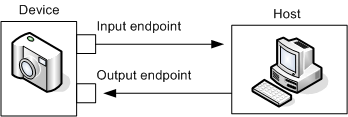
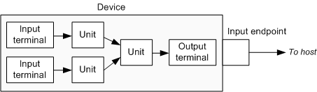

[The feature associated with this page, DirectShow, is a legacy feature. It has been superseded by MediaPlayer, IMFMediaEngine, and Audio/Video Capture in Media Foundation. Those features have been optimized for Windows 10 and Windows 11. Microsoft strongly recommends that new code use MediaPlayer, IMFMediaEngine and Audio/Video Capture in Media Foundation instead of DirectShow, when possible. Microsoft suggests that existing code that uses the legacy APIs be rewritten to use the new APIs if possible.]
This topic describes how to write applications for Universal Serial Bus (USB) video devices that capture DV video.
Standard DV format has a data rate of about 25 megabits per second (Mbps). When USB was first introduced, it did not have enough bandwidth to support DV video. However, USB 2.0 can support up to 480 Mbps, which is more than sufficient for DV video. The USB Video Device Class (UVC) specification, released in 2003, defines the payload format for USB DV video devices. A Windows Driver Model (WDM) class driver for UVC devices was introduced in Windows XP Service Pack 2.
In most respects, the UVC driver supports the same programming model as the MSDV driver for IEEE 1394 devices. Applications written for MSDV should require only minor modifications to support UVC devices.
The UVC driver behaves differently from the MSDV driver in the following areas:
To determine which driver is being used, call IAMExtDevice::get_DevicePort. The MSDV driver returns the DEV_PORT_1394 flag, and the UVC driver returns the DEV_PORT_USB flag.
Device Nodes
In USB terminology, endpoints are the points where data enters or leaves the device. An endpoint has a direction of data flow, either input (from device to host) or output (from host to device). It may help to think of these directions as being relative to the host. Input goes to the host; output comes from the host. The following diagram illustrates the two endpoints.

In a UVC device, the functions of the device are logically divided into components called units and terminals. A unit receives one or more data streams as input and delivers exactly one stream as output. A terminal is the starting point or ending point for a data stream. USB endpoints correspond to terminals, but the directions are reversed: an input endpoint is represented by an output terminal, and vice versa. The following diagram shows the relation between terminals and endpoints.

Also, not every terminal corresponds to a USB endpoint. The term endpoint refers specifically to USB connections, and a device may send or receive data through non-USB connections. For example, a video camera is an input terminal and an LCD screen is an output terminal.
In the KS Proxy filter, units and terminals are represented as nodes inside the filter. The term node is more general than the terms unit and terminal because non-USB devices can also have nodes. To get information about the nodes in a filter, query the filter for the IKsTopologyInfo interface. Node types are identified by GUIDs. Selector nodes are nodes that can switch between two or more inputs. Selector nodes expose the ISelector interface.
The following code tests whether an output pin on a filter receives input from a node of a given type.
// Structure to hold topology information.
struct TopologyConnections
{
KSTOPOLOGY_CONNECTION *connections; // Array of connections
DWORD count; // Number of elements in the array
};
/////////////////////////////////////////////////////////////////////
// Name: GetTopologyConnections
// Desc: Gets the topology information from a filter.
//
// pTopo: Pointer to the filter's IKsTopologyInfo interface.
// connectInfo: Pointer to a TopologyConnections structure. The
// function fills in this structure.
//
// Note: If the function succeeds, call CoTaskMemFree to free the
// pConnectInfo->connections array.
/////////////////////////////////////////////////////////////////////
HRESULT GetTopologyConnections(
IKsTopologyInfo *pTopo,
TopologyConnections *pConnectInfo
)
{
DWORD count;
HRESULT hr = pTopo->get_NumConnections(&count);
if (FAILED(hr))
{
return hr;
}
pConnectInfo->count = count;
pConnectInfo->connections = NULL;
if (count > 0)
{
// Allocate an array for the connection information.
SIZE_T cb = sizeof(KSTOPOLOGY_CONNECTION) * count;
KSTOPOLOGY_CONNECTION *pConnections =
(KSTOPOLOGY_CONNECTION*) CoTaskMemAlloc(cb);
if (pConnections == NULL)
{
return E_OUTOFMEMORY;
}
// Fill the array.
for (DWORD ix = 0; ix < count; ix++)
{
hr = pTopo->get_ConnectionInfo(ix, &pConnections[ix]);
if (FAILED(hr))
{
break;
}
}
if (SUCCEEDED(hr))
{
pConnectInfo->connections = pConnections;
}
else
{
CoTaskMemFree(pConnections);
}
}
return hr;
}
/////////////////////////////////////////////////////////////////////
// Name: IsNodeDownstreamFromNode
// Desc: Searches upstream from a node for a specified node type.
//
// pTopo: Pointer to the filter's IKsTopologyInfo interface.
// connectInfo: Contains toplogy information. To fill in this
// structure, call GetTopologyConnections.
// nodeID: ID of the starting node in the search.
// nodeType: Type of node to find.
// pIsConnected: Receives true if connected, or false otherwise.
//
// Note: If the source node matches the type, this function returns
// true without searching upstream.
/////////////////////////////////////////////////////////////////////
HRESULT IsNodeDownstreamFromNode(
IKsTopologyInfo *pTopo,
const TopologyConnections& connectInfo,
DWORD nodeID,
const GUID& nodeType,
bool *pIsConnected
)
{
*pIsConnected = false;
// Base case for recursion: check the source node.
GUID type;
HRESULT hr = pTopo->get_NodeType(nodeID, &type);
if (FAILED(hr))
{
return hr;
}
if (type == nodeType)
{
*pIsConnected = true;
return S_OK;
}
// If the source node is a selector, get the input node.
CComPtr<ISelector> pSelector;
hr = pTopo->CreateNodeInstance(nodeID, __uuidof(ISelector),
(void**)&pSelector);
if (SUCCEEDED(hr))
{
DWORD sourceNodeID;
hr = pSelector->get_SourceNodeId(&sourceNodeID);
if (SUCCEEDED(hr))
{
// Recursive call with the selector's input node.
return IsNodeDownstreamFromNode(pTopo, connectInfo,
sourceNodeID, nodeType, pIsConnected);
}
}
else if (hr == E_NOINTERFACE)
{
hr = S_OK; // This node is not a selector. Not a failure.
}
else
{
return hr;
}
// Test all of the upstream connections on this pin.
for (DWORD ix = 0; ix < connectInfo.count; ix++)
{
if ((connectInfo.connections[ix].ToNode == nodeID) &&
(connectInfo.connections[ix].FromNode != KSFILTER_NODE))
{
// FromNode is connected to the source node.
DWORD fromNode = connectInfo.connections[ix].FromNode;
// Recursive call with the upstream node.
bool bIsConnected;
hr = IsNodeDownstreamFromNode(pTopo, connectInfo,
fromNode, nodeType, &bIsConnected);
if (FAILED(hr))
{
break;
}
if (bIsConnected)
{
*pIsConnected = true;
break;
}
}
}
return hr;
}
/////////////////////////////////////////////////////////////////////
// Name: GetNodeUpstreamFromPin
// Desc: Finds the node connected to an output pin.
//
// connectInfo: Contains toplogy information. To fill in this
// structure, call GetTopologyConnections.
// nPinIndex: Index of the output pin.
// pNodeID: Receives the ID of the connected node.
/////////////////////////////////////////////////////////////////////
HRESULT GetNodeUpstreamFromPin(
const TopologyConnections& connectInfo,
UINT nPinIndex,
DWORD *pNodeID
)
{
bool bFound = false;
for (DWORD ix = 0; ix < connectInfo.count; ix++)
{
if ((connectInfo.connections[ix].ToNode == KSFILTER_NODE) &&
(connectInfo.connections[ix].ToNodePin == nPinIndex))
{
*pNodeID = connectInfo.connections[ix].FromNode;
bFound = true;
break;
}
}
if (bFound)
{
return S_OK;
}
else
{
return E_FAIL;
}
}
/////////////////////////////////////////////////////////////////////
// Name: IsPinDownstreamFromNode
// Desc: Tests whether an output pin gets data from a node of
// a specified type.
//
// pFilter: Pointer to the filter's IBaseFilter interface.
// UINT: Index of the output pin to test.
// nodeType: Type of node to find.
// pIsConnected: Receives true if connected; false otherwise.
/////////////////////////////////////////////////////////////////////
HRESULT IsPinDownstreamFromNode(
IBaseFilter *pFilter,
UINT nPinIndex,
const GUID& nodeType,
bool *pIsConnected
)
{
CComQIPtr<IKsTopologyInfo> pTopo(pFilter);
if (pTopo == NULL)
{
return E_NOINTERFACE;
}
// Get the topology connection information.
TopologyConnections connectionInfo;
HRESULT hr = GetTopologyConnections(pTopo, &connectionInfo);
if (FAILED(hr))
{
return hr;
}
// Find the node upstream from this pin.
DWORD nodeID;
hr = GetNodeUpstreamFromPin(connectionInfo, nPinIndex, &nodeID);
if (SUCCEEDED(hr))
{
bool isConnected;
hr = IsNodeDownstreamFromNode(pTopo, connectionInfo,
nodeID, nodeType, &isConnected);
if (SUCCEEDED(hr))
{
*pIsConnected = isConnected;
}
}
CoTaskMemFree(connectionInfo.connections);
return hr;
}
Â
Â